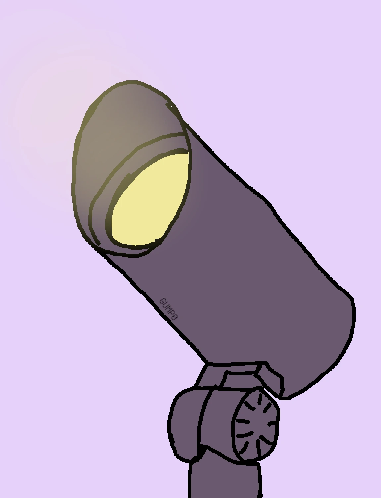
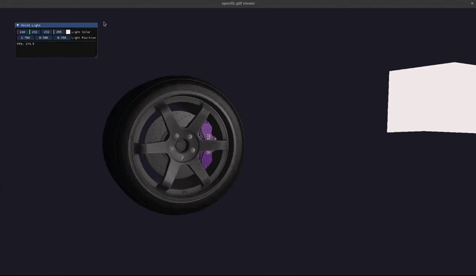
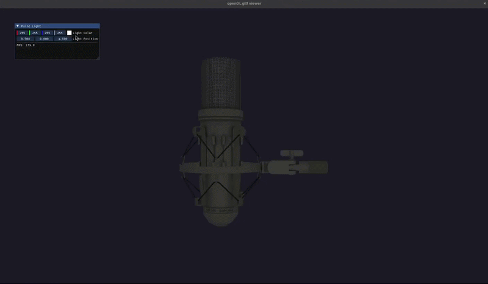

opengl-gltf-viewer
MADE WITH
MADE WITH

opengl-gltf-viewer is a lightweight gltf model viewer built solely with C++17, OpenGL, glfw and ImGUI. With the purpose of learning the basics of 3D graphics, shader scripting and how games load, render and texture 3D models under the hood.
The viewer supports the following:

